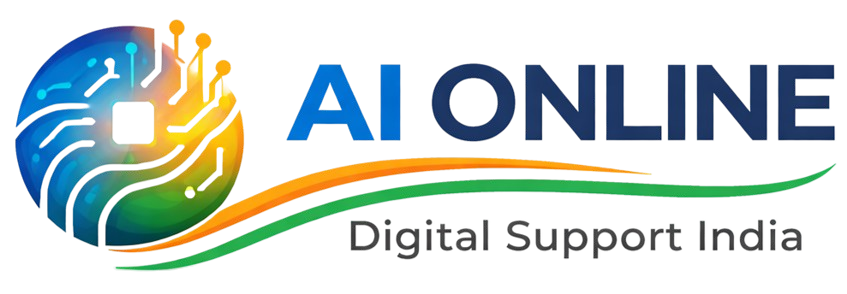

🌐 ভাষা:

https://aionline.in.net
🚆 স্মার্ট লাইভ ট্রেন ট্র্যাকার
Live Train • User GPS • Distance • Route
স্টেশন থেকে
স্টেশন পর্যন্ত
ট্রেন নম্বর লিখুন
⏹ ট্র্যাকিং বন্ধ করুন
অফিসিয়াল NTES
🛤️ ট্রেনের রুট ও বর্তমান অবস্থান
ট্রেনের তথ্য লোড হলে রুট দেখা যাবে...
🚆 Train Live Data
অপেক্ষা করছে...
📱 User GPS
অপেক্ষা করছে...
📏 Distance & Movement
অপেক্ষা করছে...
🎯 Confidence Score
0%
Verification শুরু হয়নি।
📊 GPS Samples
Sample নেই।
📍 ট্রেন এবং ব্যবহারকারীর লাইভ অবস্থান
freevisitorcounters